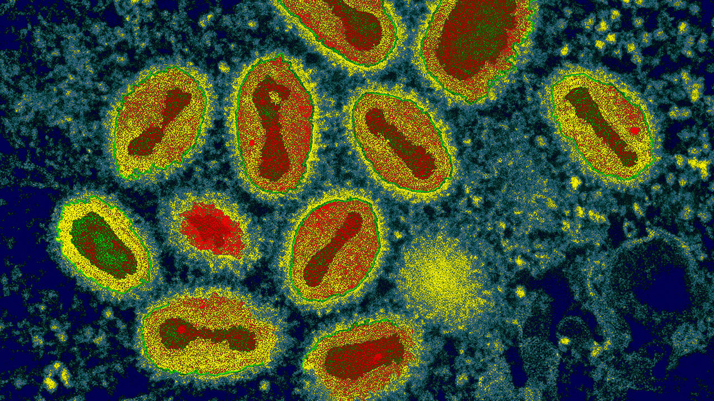

HIV / AIDS Nedir?

İnsan İmmün Yetmezlik Virüsü veya daha bilinen adıyla HIV, bağışıklık sistem hücrelerini hedef alarak enfeksiyon oluşturan ve enfeksiyonun ilerlemesi durumunda Edinilmiş İmmün Yetmezlik Sendromuna (AIDS) neden olabilen bir virüstür.
HIV; cinsel yolla, kan ve kan ürünleriyle veya anneden bebeğe bulaşmaktadır. HIV, enfeksiyonlara karşı savaşan bağışıklık sistemi hücrelerine saldırır. Bu hücrelerin kaybı bedenin enfeksiyonlara ve belirli kanser türlerine karşı savunmasız kalmasına neden olur. HIV enfeksiyonu öncesi kendiliğinden iyileşen veya tedavi edilebilen hastalıklar, savunma gücü yetersiz kaldığı için tedavi edilemez hale gelebilmektedir.
HIV enfeksiyonu ne kadar yaygındır?
80’li yıllarla beraber artışa geçen ve salgınlara yol açan HIV’in; geçmişten günümüze toplam 76 milyon kişinin enfeksiyonuna, 35 milyon kişinin AIDS’e bağlı hastalıklar nedeniyle ölümüne yol açtığı tahmin edilmektedir. 2016 yılı itibariyle dünya üzerinde 36 milyon HIV (+) hasta yaşamaktadır. Bu sayının 2 milyonunun 15 yaş altı çocuklardan oluştuğu bilinmektedir. 2016 yılı içerisinde dünya çapında 1.8 milyon yeni teşhis HIV (+) vakası mevcuttur. Türkiye’de ise 2016 yılına kadar doğrulaması yapılmış 13.518 HIV (+), 1.537 AIDS vakası bildirilmiştir.
HIV (+) ne anlama gelmektedir?
Özel test metodlarıyla yapılan değerlendirme sonuçlarına göre kişinin HIV ile enfekte olduğu anlamına gelir. Tedavi olunmadığı durumlarda, HIV bağışıklık sistemini tamamen yokedebilir ve enfeksiyon AIDS safhasına geçebilir.
HIV’den nasıl korunulur?
HIV’in bulaşmasından korunmak için, cinsel ilişki boyunca doğru ve düzenli bir biçimde kondom (prezervatif/kılıf/kaput) kullanmak, cinsel partnerlerin sayısını sınırlamak ve ilaç enjeksiyon ekipmalarını asla paylaşmamak gerekmektedir.
Anneden çocuğa HIV bulaşması HIV’in çocuklara bulaşmasının en yaygın yoludur. Hamilelik sürecinde kadınlara ve doğumdan sonra bebeklere verilen HIV ilaçları, anneden çocuğa bulaşma riskini azaltmaktadır.
HIV, HIV (+) insanlarla tokalaşarak veya onlara sarılarak, HIV (+) bireylerin kullandıkları tabakları, klozet kapakları veya kapı kolu gibi eşyalarına dokunarak da bulaşmaz. HIV, hava yoluyla, kene, sivrisinek ya da diğer böcek ısırıklarıyla da bulaşmamaktadır.
HIV(+) bireylerde belirtiler nelerdir?
Kişinin HIV ile karşılaşmasından iki ila dört hafta içerisinde ateş, üşüme, ciltte döküntü ve grip benzeri semptomlar görülebilir. Belirtiler enfeksiyondan sonra birkaç hafta boyunca devam edebilir. HIV enfeksiyonunun en erken evresi sonrası, HIV çok düşük seviyelerde artmaya devam etmektedir, bu yüzden kronik ishal, hızlı kilo kaybı ve fırsatçı enfeksiyonlar gibi daha ciddi belirtiler yıllarca görülmeyebilir. (Fırsatçı enfeksiyonlar, bağışıklık sistemi zayıflması sonrasında, sağlıklı bağışıklık sistemine sahip insanlardan daha sık veya daha ciddi olarak görülen enfeksiyonlar ve enfeksiyona bağlı kanser türleridir.)Tedavi edilmediği takdirde HIV, genellikle 10 yıl veya daha uzun bir süre sonrasında AIDS’e ilerlemektedir. Bu süre bazı bireylerde daha kısa olabilmektedir.
Kimler HIV/AIDS testi yaptırmalıdır?
Korunmasız cinsel ilişki hikayesi olan,
- Damar içi ilaç bağımlılığı ve ortak enjektör kullanımı olan,
- HIV (+) kişinin partneri olan,
- HIV görülme sıklığının yüksek olduğu ülkede doğmuş ya da yaşamış olan,
- Yüksek görülme sıklığı olan bölgelere seyahat etmiş ya da orada yaşamış olan,
- Gebeler (en erken dönemde),
- Cinsel saldırıya maruz kalanlar,
- Evlilik öncesi (gönüllülük esasına dayalı),
- Tüberküloz (verem), cinsel yolla bulaşan enfeksiyon tanısı almış olan kişiler kontrol amacıyla hekime başvurmalıdırlar.

Aziz Sebastian, Justinianus Veba sırasında vebadan etkilenen bir mezar kazıcısının hayatı için İsa'ya yalvarır. (Josse Lieferinxe, 1497-1499 dolayları)
Hastalık: Veba
Yer: Avrupa
İlk vaka: 541 AD - 542 AD

Justinianus Veba Salgınının özelliği elin nekroz olması. (1975 veba kurbanının resmi)
550 yılında Bizans İmparatorluğu'nun haritası. (Justinianus Veba Salgını'ndan 10 yıl sonra) Justinianus'un fetihleri yeşil gösterilmiştir.

Filippi'de kısmen tamamlanmış bazilika; inşaatının Justinianus Veba Salgını yüzünden yarım kaldığı düşünülmektedir.
Bunlar da İlginizi Çekebilir

